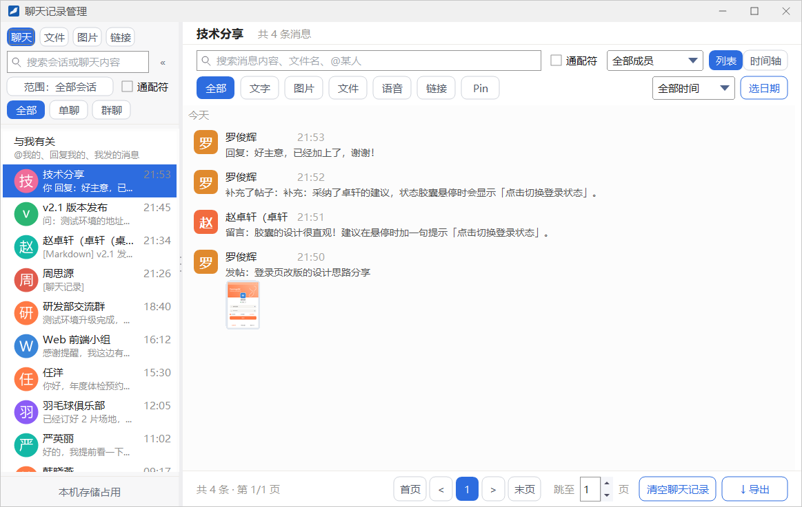
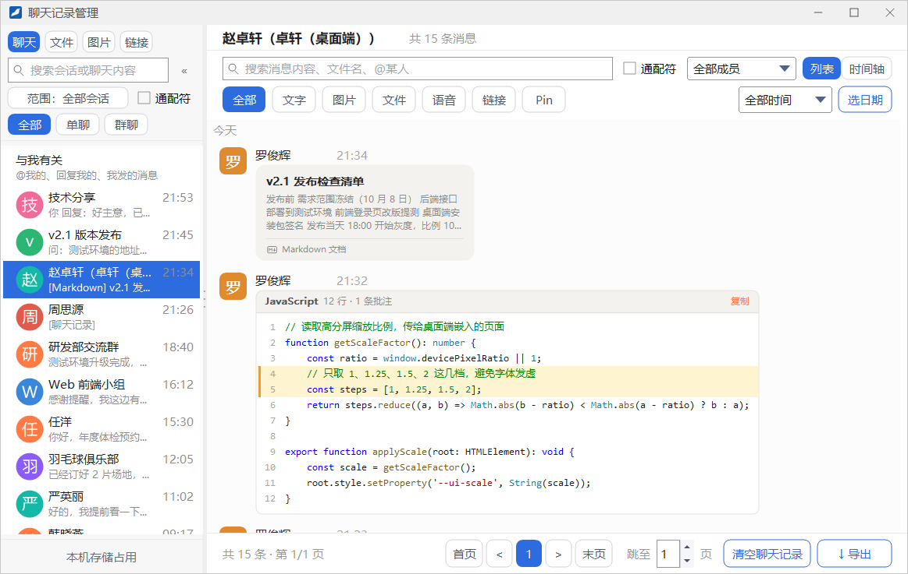
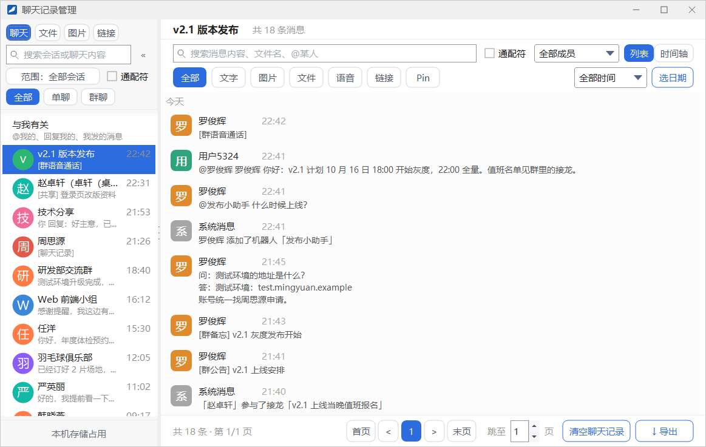
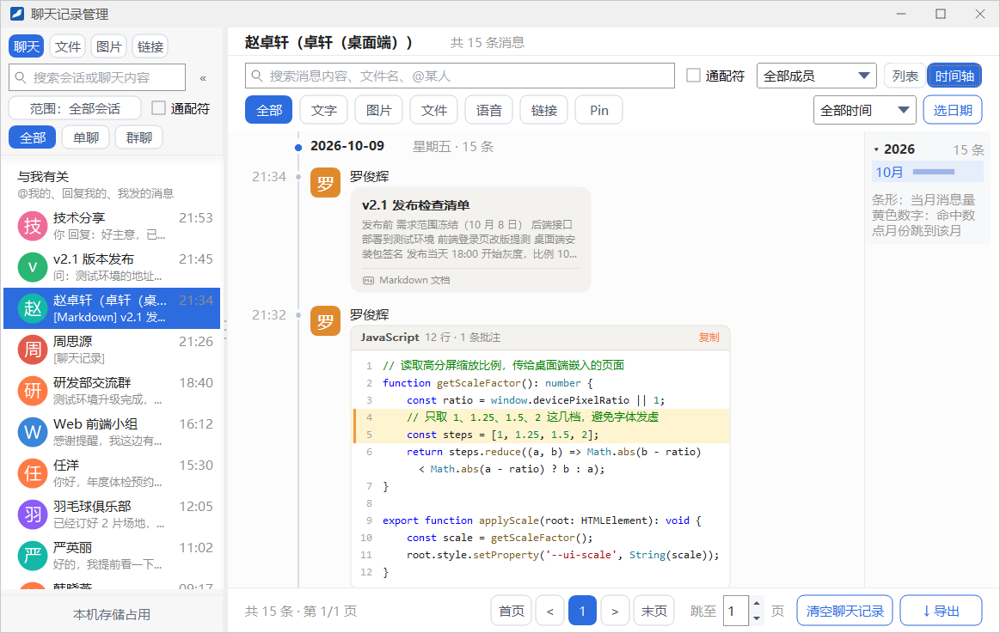
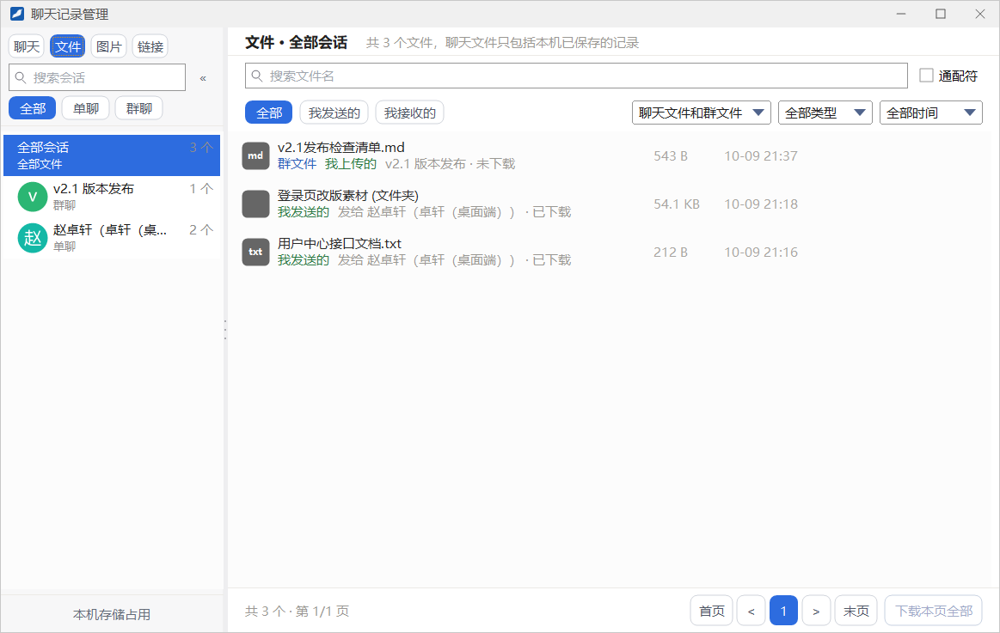
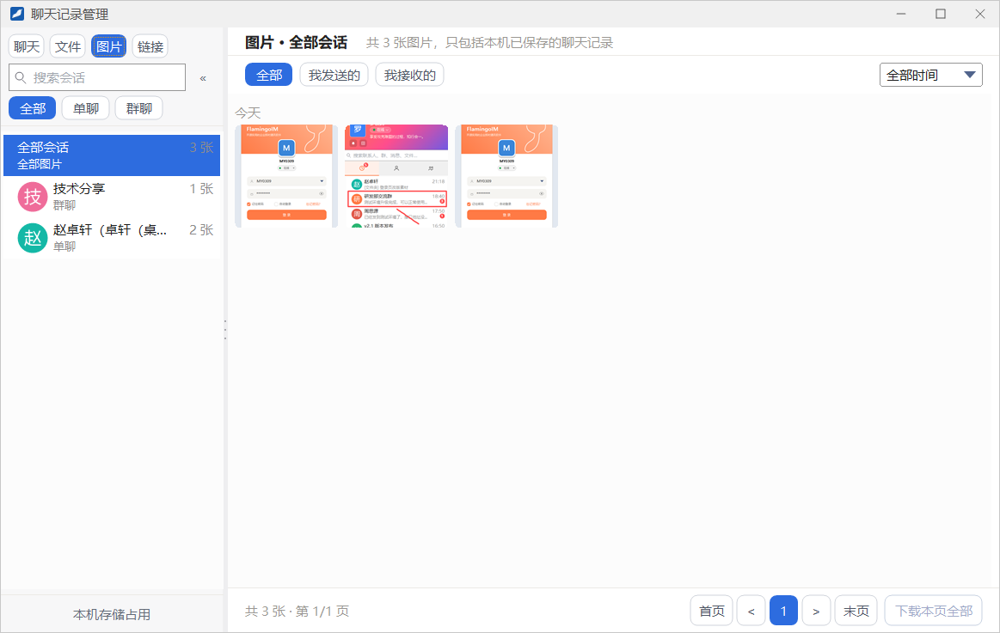
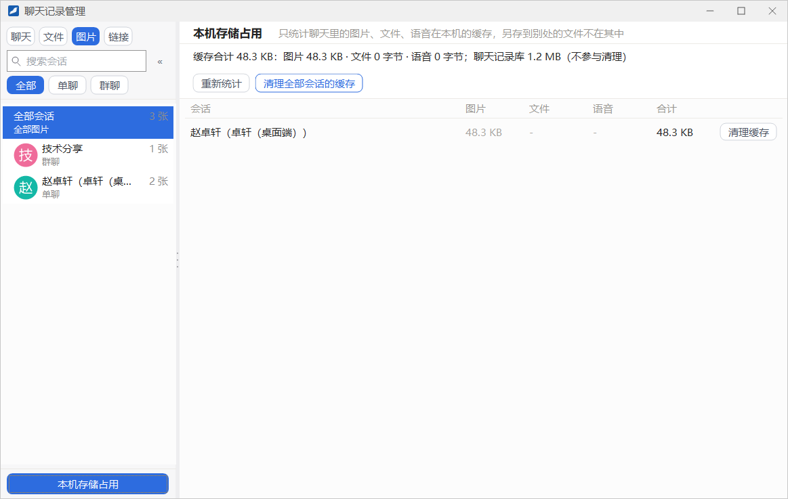
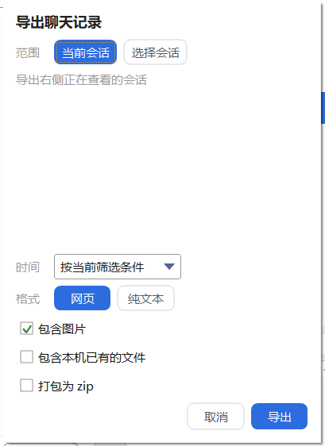

聊天记录管理
聊天记录管理窗口集中管理本机保存的全部单聊和群聊记录：按会话浏览、跨会话搜索、按类型和时间筛选、查找文件与图片、清理缓存，以及把记录导出成网页或文本。
- 适用：全体员工
- 搜索与统计的范围：本机已保存的聊天记录
打开聊天记录管理
- 在主面板的系统菜单里点 聊天记录管理，打开整个管理窗口。
- 在聊天窗口头部点时钟按钮（消息记录），直接打开这个会话的记录。
- 在会话列表、联系人或群上点右键，选 查看消息记录。

只包括本机保存的记录搜索、文件与图片库、存储统计都只针对这台电脑上保存的聊天记录。某个会话较早的消息还没有同步到本机时，翻到列表最后一页会继续往前加载。
左栏：会话与搜索
- 页签：聊天、文件、图片、链接，分别按消息、文件、图片和含链接的消息来浏览。文件和图片见下文「文件与图片库」。
- 搜索框（搜索会话或聊天内容）：输入关键字后，左栏同时列出名字匹配的会话和包含这个关键字的聊天记录（显示「N 条相关聊天记录」）。点 范围：全部会话 可以只在勾选的几个会话里搜索；勾选 通配符 后，关键字里的
*和?按通配符匹配。 - 会话类型：全部、单聊、群聊。
- 与我有关：集中查看 @我的、回复我的和我发的消息，可以再用「@我的」「回复我的」「我发的」细分。
- 会话列表：点一个会话，右侧显示它的消息。在会话上点右键可以 打开聊天窗口、导出聊天记录 或 清空聊天记录。
- 底部的 本机存储占用：见下文「本机存储占用」。
- 搜索框右侧的 « 可以收起左栏，让右侧更宽；收起后点标题左边的 » 展开。
右侧：浏览与筛选消息
在左栏点一个会话，右侧按时间列出它的消息。Markdown 文档、代码片段等以卡片显示，群里的系统消息也会列出。


右侧顶部是会话名和「共 N 条消息」，下面是两行筛选条件：
| 控件 | 说明 |
|---|---|
| 搜索框 | 提示文字为「搜索消息内容、文件名、@某人」，支持下表中的搜索语法；勾选右侧的 通配符 后，* 匹配任意多个字符，? 匹配一个字符 |
| 全部成员 | 只看某位成员发的消息 |
| 列表 / 时间轴 | 切换两种显示方式，时间轴见下文 |
| 类型胶囊 | 全部、文字、图片、文件、语音、链接、Pin。「Pin」列出这个会话里被钉住的消息 |
| 时间 | 全部时间、近 7 天、近 30 天、近 3 个月、近半年、近一年 |
| 选日期 | 选一个日期 跳到这一天，或用「从」「到」选一段日期 只看这段时间 |
搜索语法
| 写法 | 含义 |
|---|---|
| 用空格分隔多个词 | 同时包含这几个词的消息才算命中 |
-词 | 排除含这个词的消息 |
“带 空格” | 引号括起来的部分当作一个词 |
from:名字 | 只看这个人发的消息 |
type:图片 | 按类型筛选，可写图片、文件、语音、链接、文字、Pin |
after:2026-10-01 before:2026-10-31 | 按日期筛选，包含当天 |
翻页与底部按钮
底部显示「共 N 条 · 第 X/Y 页」，用 首页、<、>、末页 翻页，或在 跳至 框里输入页码。右下角还有两个按钮：
- 清空聊天记录：清空这个会话中你这一方的记录，你登录的其他设备会同步清空，对方或其他群成员的记录不受影响，清空后无法恢复。
- ↓ 导出：见下文「导出聊天记录」。
消息的右键菜单
在一条消息上点右键，菜单会按消息类型列出可用的操作：
| 分组 | 菜单项 |
|---|---|
| 处理内容 | 复制；图片消息有复制图片、图片另存为、打开所在文件夹；文件消息有打开文件、打开所在文件夹、另存为；没下载过的图片和文件显示「下载」 |
| 查看前后文 | 定位到聊天窗：打开聊天窗口并跳到这条消息；查看上下文：设了筛选条件时出现，留在本窗口里查看这条消息的前后内容 |
| 转发与标记 | 转发、多选（进入多选后可以合并转发或逐条转发）、Pin / 取消 Pin |
| 删除 | 删除这条消息。删除后，本机和你的其他设备都不再显示这条消息，对方不受影响 |
转发、多选与 Pin 的详细说明见「消息的更多操作」。
时间轴视图

点右上角的 时间轴，消息按日期分组排列，每天的标题显示日期、星期和当天的条数，每条消息左侧标有时间。右侧的年月导航中：条形表示当月的消息量，黄色数字表示搜索命中的条数，点月份可以跳到该月。
在时间轴视图里搜索时，消息不会被过滤掉，而是保留上下文、只高亮命中的地方，用 ▲ 上一处、▼ 下一处 在命中之间跳转。
文件与图片库

点左栏的 文件 页签，可以在一处找到聊天里收发过的文件和你所在群的群文件。左栏列出「全部会话」以及每个会话的文件数，右侧是文件列表：
- 用 搜索文件名 查找文件。
- 用 全部、我发送的、我接收的 按收发方向筛选。
- 来源下拉框可选 聊天文件和群文件、只看聊天文件 或 只看群文件；类型下拉框可选文档、图片、视频、音频、压缩包、其它、文件夹；时间下拉框与消息列表相同。
- 每一行标出文件来自群文件还是聊天、发给了谁，以及「已下载」或「未下载」。
- 点右下角的 下载本页全部，可以一次下载本页还没下载的文件。

图片 页签以缩略图集中显示聊天里的图片，同样可以按 我发送的、我接收的 和时间筛选。链接 页签列出含链接的消息，每一行可以打开链接、复制链接或定位到聊天。
本机存储占用

点左栏底部的 本机存储占用，右侧显示聊天图片、文件和语音在本机的缓存大小，按会话从多到少列出。另存到别处的文件不计算在内；聊天记录库本身的大小也会显示，但不参与清理。
- 重新统计：重新计算占用。
- 清理缓存：清理某一个会话的缓存；清理全部会话的缓存：一次清理全部。
清理缓存不会删除聊天记录清理后聊天记录仍然保留，需要查看图片或文件时可以重新下载。同一个文件也发在别的会话里时，那边也需要重新下载。正在使用的文件不会被删除。
导出聊天记录

- 点右下角的 ↓ 导出，或在左栏的会话上点右键选 导出聊天记录。
- 选择 范围：当前会话（右侧正在查看的会话），或 选择会话 后勾选要导出的多个会话。
- 选择 时间：按当前筛选条件，或全部时间、近 7 天等固定范围。
- 选择 格式：网页 或 纯文本。
- 按需勾选 包含图片、包含本机已有的文件 和 打包为 zip。
- 点 导出，选择保存位置。完成后会提示导出了几个会话、共多少条消息，并询问是否打开所在的文件夹。
导出的几点说明只有本机已经存在的图片和文件才能带上，已经被移动、删除或正被占用的文件会在完成提示里列出数量。打包后的文件超过 4 GB 时无法打包成 zip，这时请取消「打包为 zip」，改为导出到文件夹。